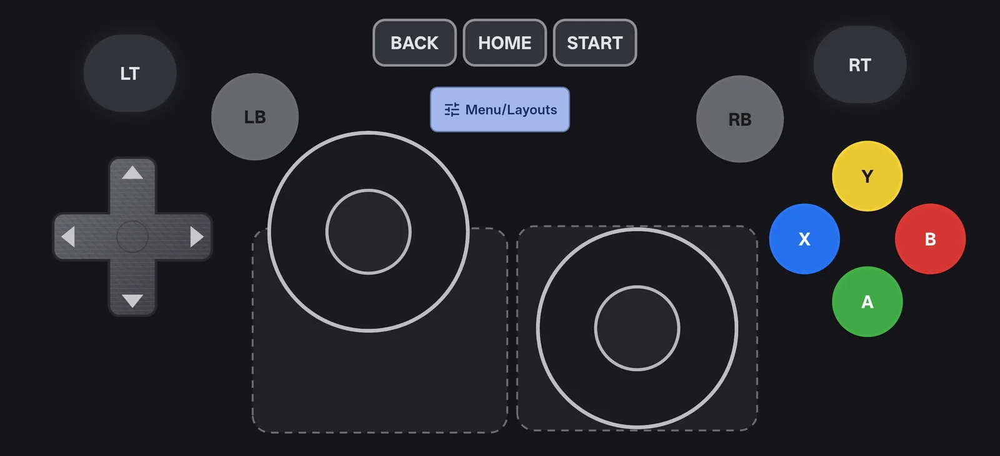
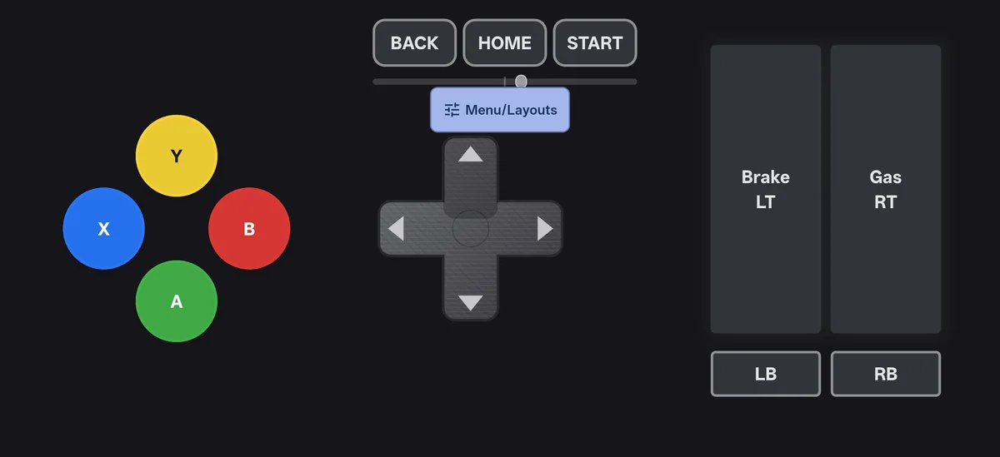

Điện thoại của bạn là tay cầm.
Tay cầm chơi game, bàn phím và chuột, remote TV và bút trình chiếu cho PC, Mac, TV hoặc máy tính bảng.
Miễn phí. Dùng Bluetooth thì không cần cài gì trên thiết bị kia.

Kết nối theo cách của bạn
Bluetooth
Không cần cài đặtGhép nối một lần trong cài đặt Bluetooth của PC, Mac, TV hoặc máy tính bảng. Điện thoại hiện ra như một tay cầm, bàn phím và chuột thật.
Hướng dẫn cài đặt BluetoothWi‑Fi với Companion
Windows, tùy chọnĐộ trễ thấp nhất, tự tìm PC của bạn và cho phép tối đa 16 điện thoại chơi cùng lúc.
Gặp cảnh báo của trình duyệt hoặc SmartScreen?
Companion còn mới nên Windows và trình duyệt chưa nhận ra nó. Điều này bình thường với phần mềm mới.
- Trình duyệt báo tệp không thường được tải xuống: mở danh sách tải xuống (Ctrl + J), mở menu của tệp và chọn Giữ lại, rồi chọn Vẫn giữ lại nếu được hỏi.
- "Windows đã bảo vệ PC của bạn": nhấp Thông tin thêm, rồi nhấp Vẫn chạy.
- Chấp nhận lời nhắc Kiểm soát tài khoản người dùng để trình cài đặt có thể thêm driver ViGEmBus.
Trình cài đặt chỉ thêm driver mã nguồn mở ViGEmBus khi máy chưa có, để game nhận điện thoại là tay cầm Xbox. Để dùng Wi‑Fi, hãy cho phép Companion trên mạng riêng trong Tường lửa Windows.
Tay cầm thật, ngay trên điện thoại
Cần analog, cò, nút vai và D-pad. Game nhận ra một tay cầm thật nên cứ thế mà chạy.


- Cần analog nổiXuất hiện ở bất cứ đâu ngón cái bạn chạm vào.
- Nhấn cần analogChạm hai lần vào cần để nhấn xuống.
- Chơi cùng bạn bèTối đa 16 điện thoại trên một PC Windows, mỗi máy là một tay cầm riêng.
Không chỉ là tay cầm
Đổi bố cục từ menu. Cùng ứng dụng, cùng kết nối.
-

ChuộtBàn di chuột, nhấp, cuộn và phím tắt. -

Bàn phímMọi phím, kể cả phím F và phím tắt. -

Remote TVÂm lượng, điều khiển phát và mũi tên cho mọi ứng dụng TV. -

Bút trình chiếuPowerPoint, Google Trang trình bày hoặc Canva.
Còn có trong ứng dụng

- Tải miễn phíTrên Google Play.
- Không cần tài khoảnMở ra là chơi.
- Chỉ trong mạng của bạnThao tác đi thẳng từ điện thoại đến thiết bị của bạn.

Cầm điện thoại lên. Bấm chơi.
Miễn phí cho Android. Companion cho Windows là tùy chọn.